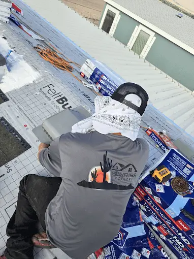

About Us · Tucson, AZ
Tucson's Roofers — Honest, Local, Built to Last
Sunrise Roofers LLC is a licensed, locally run roofing company working Tucson and Pima County. We built our name the slow way, straight answers, good work, and roofs that hold up out here.
- Licensed & Insured · ROC #358079
- Local & family-run
- 5-Star rated on Google
- 20+ years roofing the desert
Who We Are
A roofer Tucson can actually trust
Let's be honest, roofing's got a reputation problem. Pushy sales, problems that aren't really there, and crews you can't get ahold of the second something goes wrong. We started Sunrise Roofers to be the opposite of all that.
We're local. We inspect it straight, recommend only what the roof actually needs, run our own trained crews, and stand behind what we do. That's why most of our work comes from referrals and folks calling us back.
- Honest, no-pressure inspections
- Our own crews — never anonymous subs
- Workmanship & manufacturer warranties
- Licensed, bonded & insured (ROC #358079)
Honest Assessments
If your roof is fine, we'll say so. We never invent problems to sell work.
Quality Workmanship
Trained crews, proper materials and details done right — backed by warranties.
Truly Local
Tucson-based and reachable directly. We know desert roofs because we live under them.
Our Standard
Why Tucson homeowners choose us
Anybody can say they do quality work. We try to earn it on every job with the stuff that actually matters to a homeowner.
Built for the Desert
Roofing knowledge specific to Tucson
Roofing in the desert isn't like roofing anywhere else. The UV bakes underlayment and shingles right out, the monsoons test every flashing and seam you've got, and tile roofs hide old worn-out felt under tile that still looks great.
That's exactly what we deal with day in and day out, tile underlayment, reflective coatings, heat-rated shingle and metal, and quick storm response when the monsoon hits, so your roof's actually built for where it sits.
- Tile underlayment expertise
- Reflective, heat-smart systems
- Monsoon & storm response
- Materials rated for desert UV
How It Works
Our Roofing Process
Free Inspection
We document your roof's condition with photos and explain it in plain English.
Honest Recommendation
Repair, maintain or replace — only what your roof genuinely needs.
Quality Work
Our own crews install to spec with proper materials and clean job sites.
We Stand Behind It
Workmanship warranties and a team you can still reach after the job's done.
FAQ
Roofing Questions, Answered
Still wondering about something? Call us at 520-753-1758 — straight answers, no pressure.
Ask Us DirectlyIs Sunrise Roofers licensed and insured?
Yep. Sunrise Roofers LLC is licensed, bonded and insured in Arizona under ROC #358079, so you're covered on every job.
What areas do you serve?
Tucson and all of Pima County, Oro Valley, Marana, Vail, Corona de Tucson, Sahuarita and Green Valley.
What makes you different from other Tucson roofers?
Honest, no-pressure inspections, our own trained crews instead of whoever's cheapest that week, clear written estimates, and work that's backed by warranty. Most of our business walks in through referrals and repeat customers.
What roof types do you work on?
All of them, tile, shingle, metal and flat, on both homes and commercial buildings.
Do you offer free estimates?
Yep. The inspection and the estimate are both free, no obligation.
Explore More
Explore Sunrise Roofers
Let's take a look at your roof
Free inspection, a straight assessment, and a clear written estimate, usually back to you within a day.
Let's Talk
Let's Take a Look at Your Roof
Tell me what's going on up there — a leak, storm damage, an old roof that's seen better days, or a full replacement — and we'll get you on the books for a free inspection.